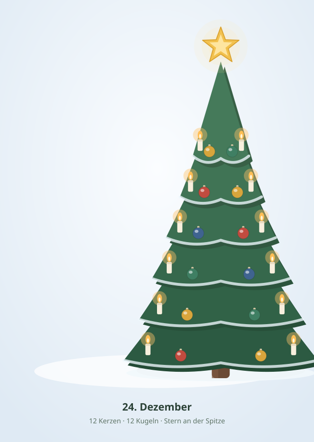
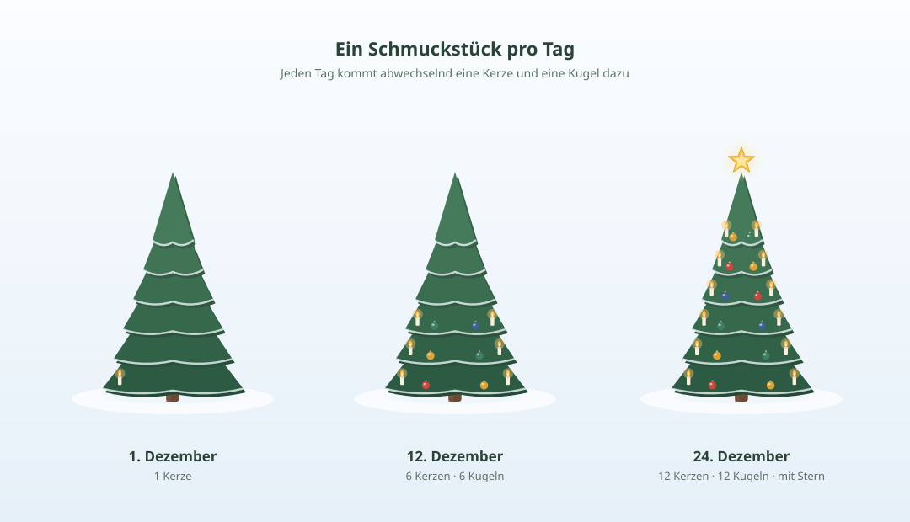

Vom 1. bis 26. Dezember steht rechts neben dem Wald ein geschmückter Christbaum.
Jeden Tag kommt abwechselnd eine Kerze und eine Kugel dazu, am 24. leuchtet der Stern.
Der Wald liegt unter leichtem Schnee.

Der vollständige Baum am 24. Dezember12 Kerzen, 12 Kugeln, Stern an der Spitze. Die Kerzen flackern sanft, die Zweige tragen eine leichte Schneeauflage.

Ein Schmuckstück pro TagDie Deko wächst von unten nach oben, abwechselnd Kerze und Kugel. Jeder Tag füllt genau einen festen Platz – nichts springt nachträglich.Die Wald-Ansicht im DezemberChristbaum rechts neben dem Hain, Boden und Baumkronen mit Schnee, kühler Winterhimmel, langsam fallende Flocken.
Alle Bilder werden direkt aus dem App-Code erzeugt (src/christmas.js, src/trees.js,
src/forest.js) – nicht nachgezeichnet. Neu erzeugen mit node scripts/christmas-preview.mjs.